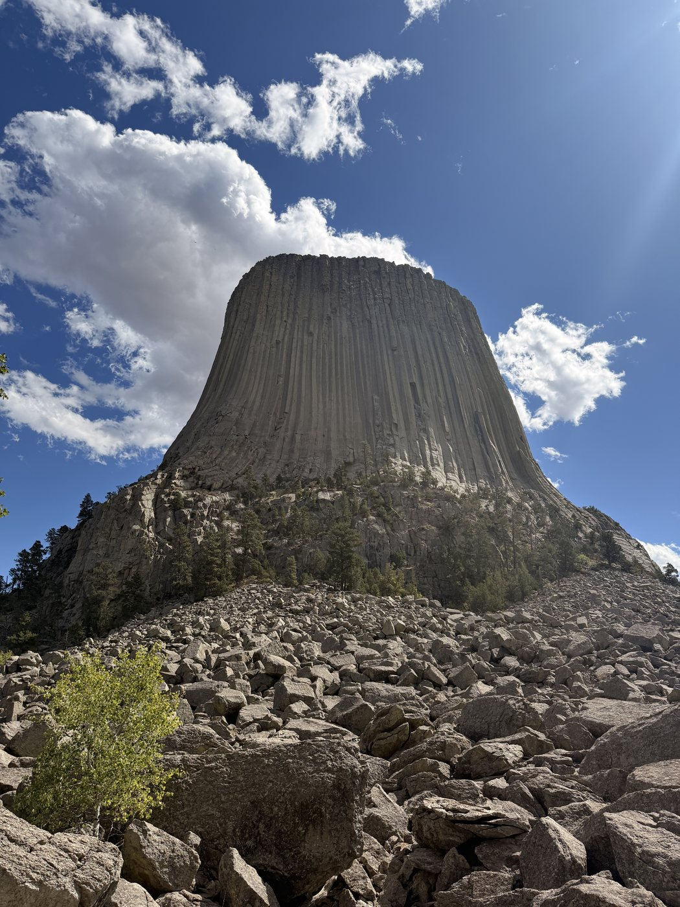
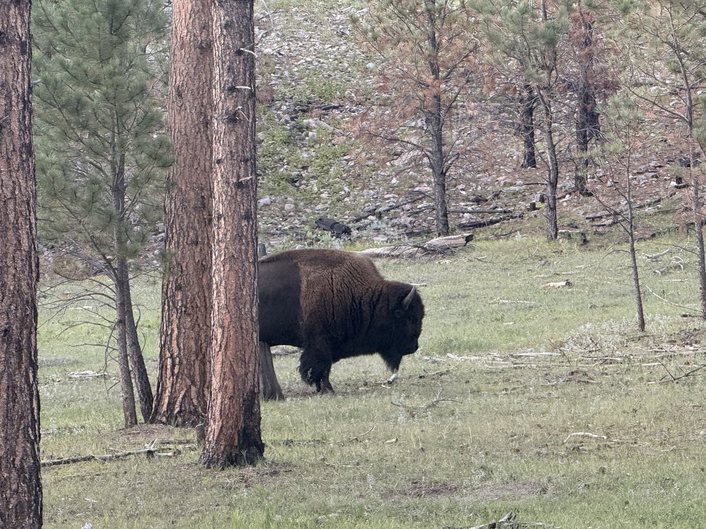
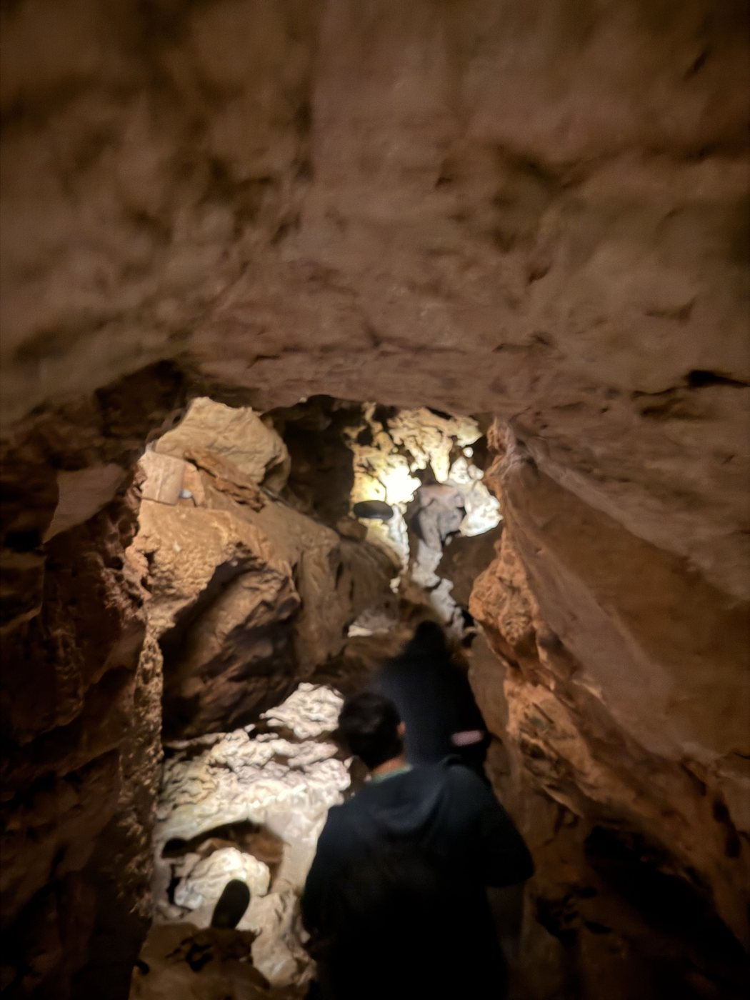
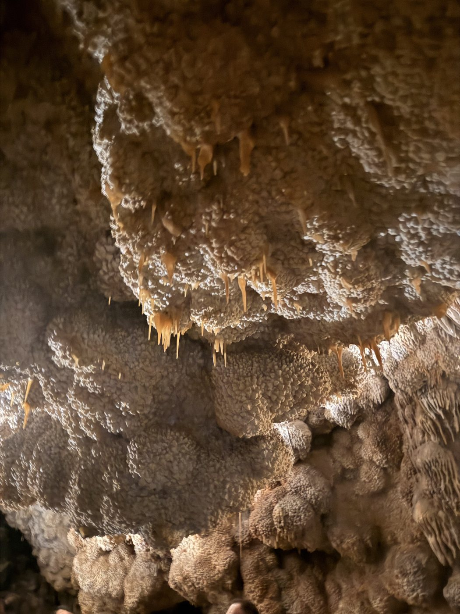
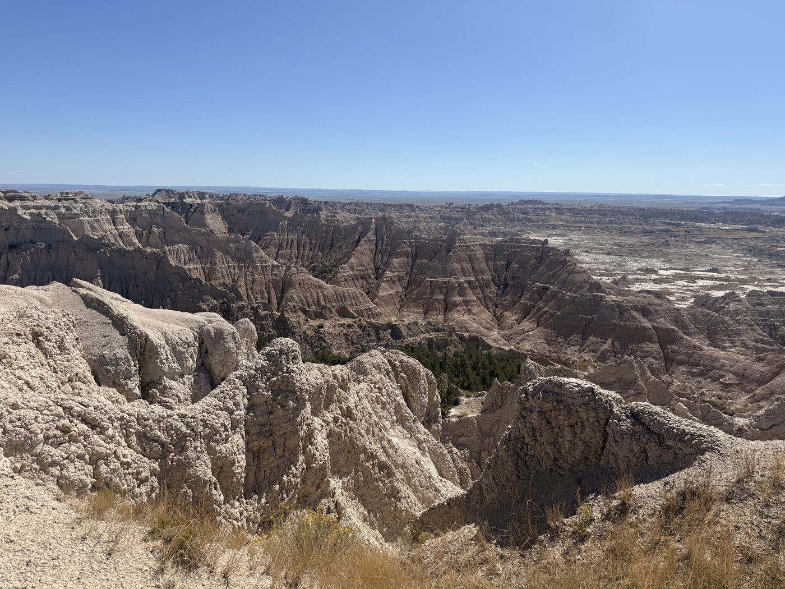
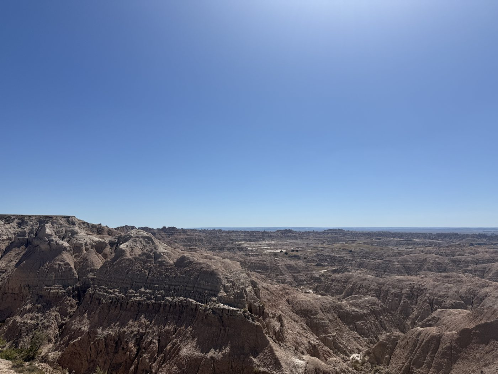
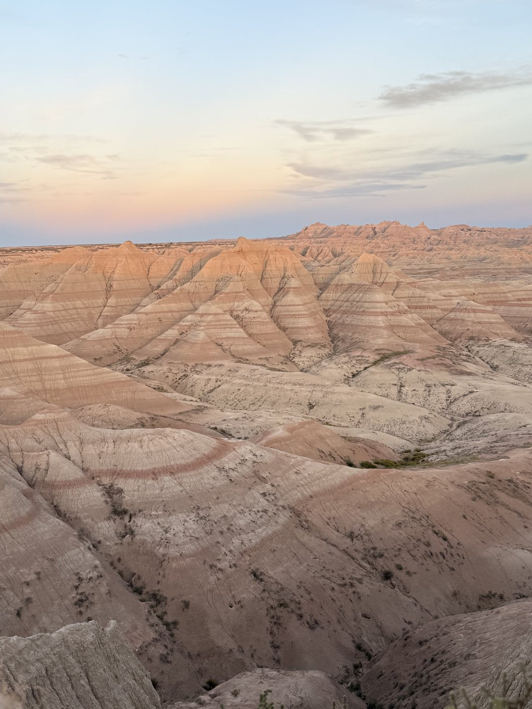

🦬 Dakotas Road Trip
A six-day drive from Denver up through the Black Hills and the Badlands into North Dakota. Two cave parks, Custer State Park's wildlife loop at dusk, Mount Rushmore after dark, Devils Tower on the way north, and Theodore Roosevelt National Park at the far end.







Land in Denver
A near-midnight landing at DEN. Free airport shuttle to a hotel by the terminal, and straight to sleep so the first driving day starts early.
Denver to Custer, South Dakota
The long one, about 360 miles north. Lunch stop in Cheyenne, then into the Black Hills for a mid-afternoon tour at Wind Cave National Park. Out by late afternoon to drive the Custer State Park Wildlife Loop at dusk, which is when the bison, pronghorn and burros are out. Night at Sylvan Lake Lodge, inside the park.
Jewel Cave, Sylvan Lake, Mount Rushmore
Early tour at Jewel Cave National Monument, back for a walk around Sylvan Lake, then a short 60-mile hop toward Rapid City. Mount Rushmore in the evening for the lighting ceremony, which starts around 8pm. Two nights in Rapid City.
Badlands National Park
A 160-mile loop out to the Badlands and back. The Loop Road with stops at the overlooks, Pinnacles Overlook among them, which is worth timing for the light.
Devils Tower, then on to Medora, North Dakota
West into Wyoming first for Devils Tower National Monument, which is worth the detour and the walk around its base, then back up through Spearfish Canyon and north. A long day, roughly 330 miles before the detour, ending in Theodore Roosevelt National Park's South Unit in the late afternoon. Night in Medora at Elkhorn Quarters.
More Theodore Roosevelt, then Bismarck
A last morning in the park before the 210-mile drive east to Bismarck.
- Wind Cave National Park, one of the longest caves in the world, tours only
- Custer State Park Wildlife Loop Road, best at dusk for bison and pronghorn
- Jewel Cave National Monument, early tour before the day heats up
- Sylvan Lake, an easy loop walk right by the lodge
- Mount Rushmore, the evening lighting ceremony rather than the midday crowds
- Badlands National Park, the Loop Road and Pinnacles Overlook
- Devils Tower National Monument, Wyoming, the Tower Trail loops right around the base
- Spearfish Canyon, a scenic detour on the way out of the Black Hills
- Theodore Roosevelt National Park, South Unit, the quietest park of the trip
- Denver airport hotel for the late landing
- Sylvan Lake Lodge, inside Custer State Park
- Rapid City, two nights, a good base for both Rushmore and the Badlands
- Elkhorn Quarters, Medora, North Dakota
- EverSpring Suites, Bismarck
- Both cave parks are tour-only and timed. Book well ahead, and leave buffer in the drive to make your slot.
- Custer State Park needs its own state park pass. The America the Beautiful park pass does not cover it.
- Drive the Wildlife Loop near dusk. Mid-afternoon is the worst time for seeing anything.
- The Mount Rushmore lighting ceremony runs in the evening through early fall. Check the current start time before you go.
- Denver to Custer is the long leg of the trip. Starting early makes the Wind Cave tour timing much less stressful.
- Medora is small and seasonal, so lodging goes quickly.